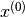
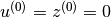
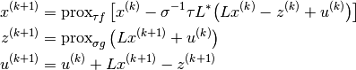
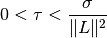

admm_linearized¶
-
odl.solvers.nonsmooth.admm.admm_linearized(x, f, g, L, tau, sigma, niter, **kwargs)[source]¶ Generic linearized ADMM method for convex problems.
ADMM stands for “Alternating Direction Method of Multipliers” and is a popular convex optimization method. This variant solves problems of the form
min_x [ f(x) + g(Lx) ]
with convex
fandg, and a linear operatorL. See Section 4.4 of [PB2014] and the Notes for more mathematical details.Parameters: - x :
L.domainelement Starting point of the iteration, updated in-place.
- f, g :
Functional The functions
fandgin the problem definition. They need to implement theproximalmethod.- L : linear
Operator The linear operator that is composed with
gin the problem definition. It must fulfillL.domain == f.domainandL.range == g.domain.- tau, sigma : positive float
Step size parameters for the update of the variables.
- niter : non-negative int
Number of iterations.
Other Parameters: - callback : callable, optional
Function called with the current iterate after each iteration.
Notes
Given  (the provided
x) and , linearized ADMM applies the following iteration:
The step size parameters
 and
and  must satisfy
must satisfy
to guarantee convergence.
The name “linearized ADMM” comes from the fact that in the minimization subproblem for the
 variable, this variant
uses a linearization of a quadratic term in the augmented Lagrangian
of the generic ADMM, in order to make the step expressible with
the proximal operator of
variable, this variant
uses a linearization of a quadratic term in the augmented Lagrangian
of the generic ADMM, in order to make the step expressible with
the proximal operator of  .
.Another name for this algorithm is split inexact Uzawa method.
References
[PB2014] Parikh, N and Boyd, S. Proximal Algorithms. Foundations and Trends in Optimization, 1(3) (2014), pp 123-231.
- x :